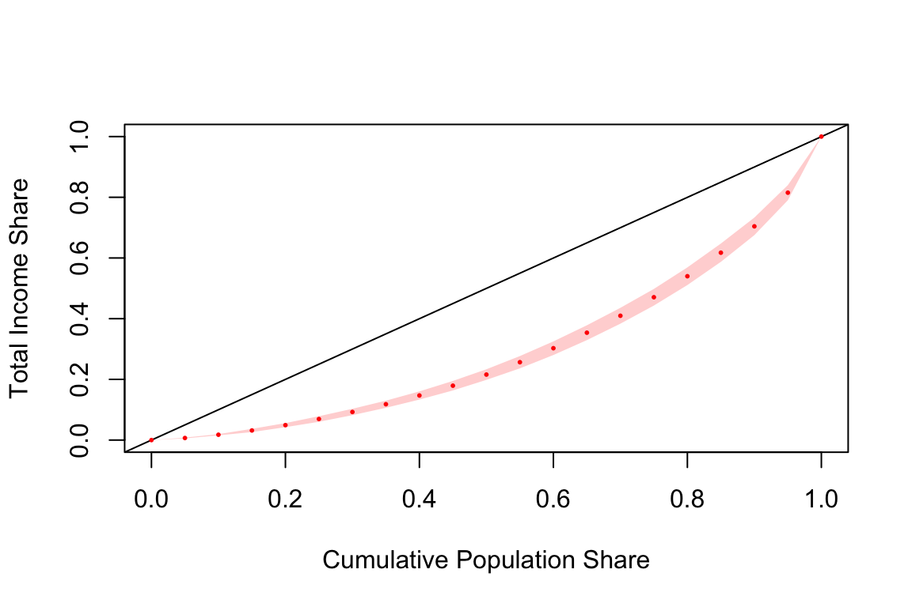
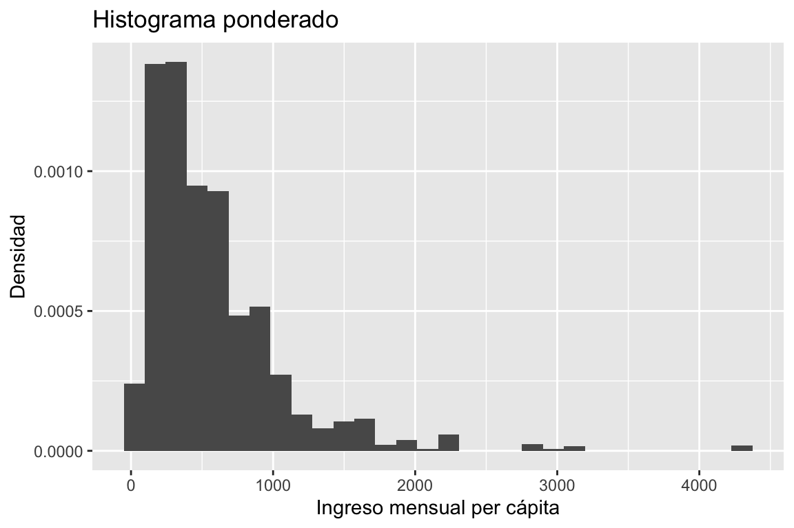
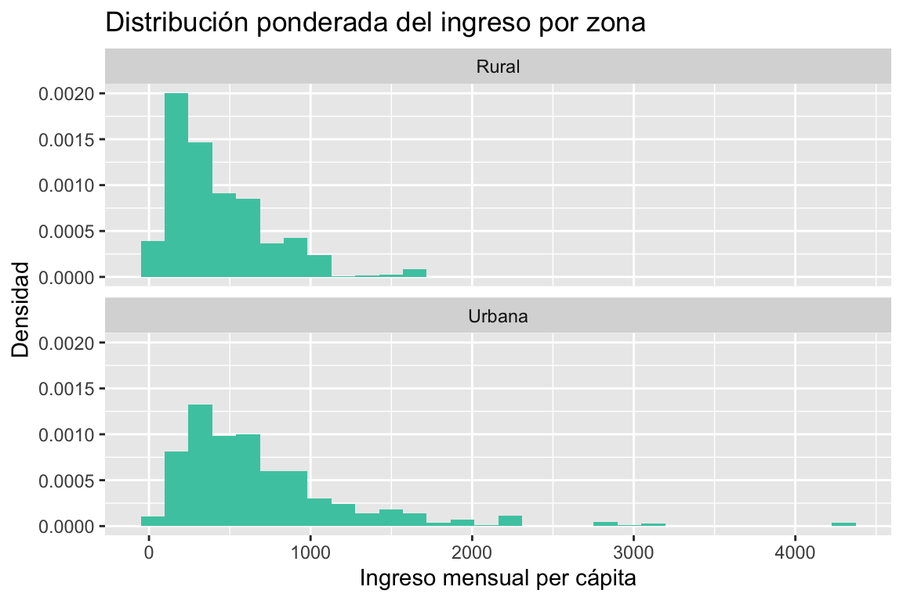
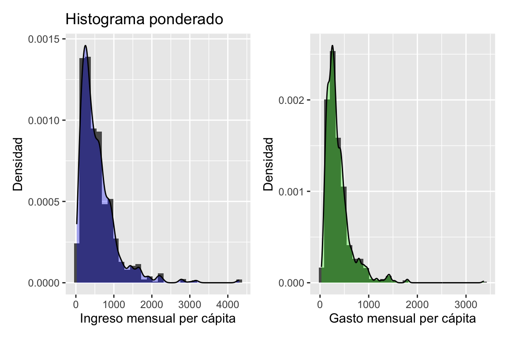
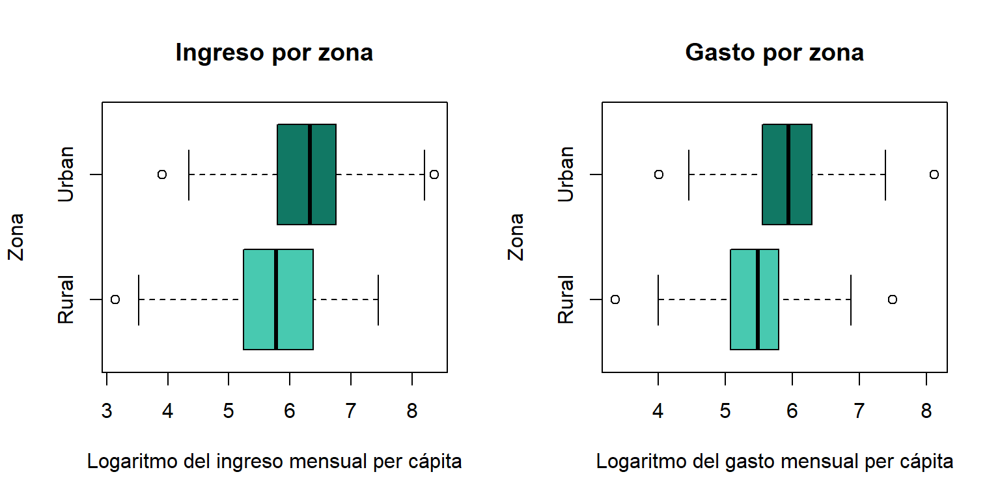
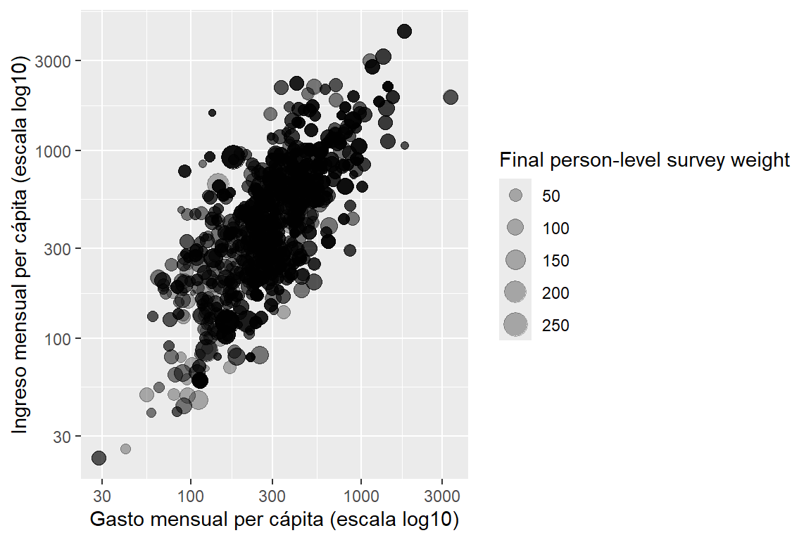
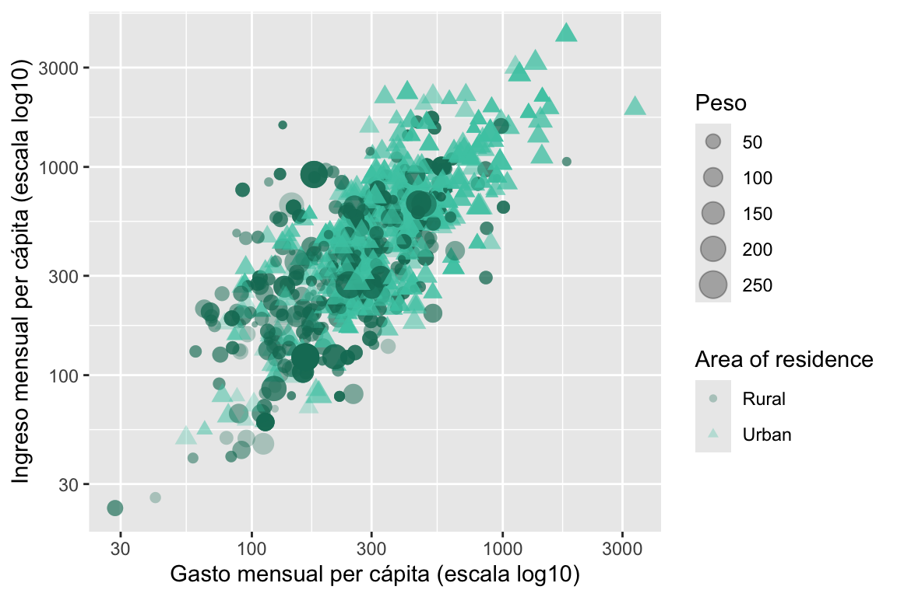

library(tidyverse)
library(survey)
library(srvyr)
survey_data <- readRDS("../data/sample.rds")4 Análisis de las variables continuas
El capítulo anterior se centró en variables categóricas. En este se estudian variables numéricas y las relaciones entre ellas, con ejemplos basados en el ingreso y el gasto. Se presentan estimaciones descriptivas y sus medidas de precisión, pruebas y contrastes, y herramientas gráficas para explorar distribuciones y asociaciones. El código siguiente carga los datos y los paquetes necesarios para ejecutar el capítulo de forma independiente.
Con los datos cargados, se define el diseño muestral que se utilizará para realizar la inferencia apropiada en este capítulo.
options(survey.lonely.psu = "adjust")
survey_design <- survey_data %>%
as_survey_design(
strata = Stratum,
ids = PSU,
weights = wk,
nest = TRUE
)4.1 Estimación de parámetros descriptivos
Las medidas descriptivas resumen distintos aspectos de una variable numérica, desde su nivel y dispersión hasta su distribución y desigualdad. En esta sección se explica cómo estimarlas con el diseño muestral y cómo evaluar su precisión.
4.1.1 Totales
Como se ha señalado anteriormente, el total poblacional de una variable de interés puede estimarse mediante una suma ponderada; cuando los factores de expansión están calibrados, corresponde al estimador de calibración (Deville y Särndal 1992). Se pondera el valor observado en cada unidad por su factor de expansión. En un diseño de muestreo con estratificación y selección en varias etapas, este estimador se expresa como:
\[ \hat{t}_y = \sum_{h} \sum_{i} \sum_{k} w_{hik}\,y_{hik}, \tag{4.1}\]
donde \(h\) identifica el estrato, \(i\) la unidad primaria de muestreo y \(k\) la unidad final observada. El término \(y_{hik}\) representa el valor de la variable de interés para la unidad \(k\) perteneciente a la unidad primaria \(i\) del estrato \(h\), mientras que \(w_{hik}\) corresponde a su factor de expansión. De este modo, cada unidad de la muestra representa a un determinado número de unidades de la población, y la suma ponderada permite reconstruir el total poblacional.
La varianza de \(\hat{t}_y\) puede estimarse mediante el método del último conglomerado presentado en la sección 2.5.2.1. Siguiendo su notación, la contribución de cada UPM se define como:
\[ \hat{t}_{y_i}=\sum_{k\in s_{hi}}w_{hik}y_{hik}. \]
Esta cantidad suma los valores ponderados de las unidades observadas en la UPM \(i\); el estrato \(h\) queda implícito para mantener la notación de aquella sección. El promedio de estas contribuciones en el estrato es:
\[ \hat{\bar{t}}_{y_h}=\frac{1}{n_h}\sum_{i=1}^{n_h}\hat{t}_{y_i}. \]
Aquí \(n_h\) es el número de UPM seleccionadas en el estrato \(h\). Este promedio sirve de referencia para calcular la dispersión entre UPM. La varianza estimada se expresa como (Hansen et al. 1953; Wolter 2007):
\[ \widehat{\operatorname{Var}}(\hat{t}_y) = \sum_h \frac{n_h}{n_h-1} \sum_{i=1}^{n_h} \left(\hat{t}_{y_i}-\hat{\bar{t}}_{y_h}\right)^2. \tag{4.2}\]
La expresión suma, sobre los estratos, la dispersión de las contribuciones de las UPM respecto de su promedio en cada estrato. Su raíz cuadrada es el error estándar de \(\hat{t}_y\). Se utiliza la aproximación de selección independiente con reemplazo de las UPM, sin corrección por población finita, coherente con el objeto survey_design definido en este capítulo. La fórmula requiere al menos dos UPM por estrato; para estratos con una sola UPM se aplica el tratamiento especificado al preparar el diseño. Al tomar \(y_{hik}=1\), se recupera la fórmula del tamaño poblacional \(\hat{N}\) del capítulo anterior; al tomar \(y_{hik}=I(k\in d)\), se obtiene la correspondiente al tamaño de la subpoblación \(\hat{N}_d\). Aquí \(n_h\) representa la misma cantidad de UPM que se denotó por \(m_h\) en esas fórmulas.
En R, la función survey_total() se utiliza para estimar totales a partir del objeto de diseño. Esta función incorpora automáticamente los factores de expansión y la estructura del diseño, garantizando que las estimaciones reflejen correctamente el modelo de inferencia.
Los argumentos generales de survey_total() se presentaron en la Sección 3.2.1. La diferencia es que ahora se suministra una variable como Income o Expenditure; con x = 1 se recuperaría el tamaño poblacional. Se mantienen vartype, level y el tratamiento explícito de faltantes. El siguiente ejemplo presenta cómo estimar totales y sus intervalos de confianza para diferentes variables de interés en R, utilizando la función survey_total(), cuyos resultados se presentan en la tabla 4.1:
income_total_table <- survey_design %>%
summarise(
total = survey_total(
Income,
vartype = c("se", "ci"),
deff = TRUE
)
)
income_total_table| Total | EE | LI 95 % | LS 95 % | Efecto de diseño |
|---|---|---|---|---|
| 85793667 | 4778674 | 76331414 | 95255920 | 11 |
De la tabla, se obtiene que la estimación corresponde a la suma ponderada del ingreso per cápita asociado a las personas representadas por la encuesta. No debe interpretarse como el ingreso total de los hogares. Este valor incorpora los factores de expansión y las características del diseño muestral. El error estándar asociado a esta estimación es de 4.778.674, lo que refleja la variabilidad muestral del estimador. A partir de este valor se construye un intervalo de confianza del 95%, cuyos límites inferior y superior son 76.331.414 y 95.255.920, respectivamente. El efecto de diseño (deff), en el sentido desarrollado por Kish (1965), es cercano a 11: la varianza supera considerablemente la del diseño de referencia. Su magnitud refleja el efecto combinado del diseño y la ponderación y no debe interpretarse como una pérdida ligera de precisión.
Para continuar ilustrando el uso de la función survey_total(), estimemos el total poblacional del gasto per cápita, pero ahora calculando el intervalo de confianza al 90%. El siguiente código realiza esta estimación, presentada en la tabla 4.2:
expenditure_total_table <- survey_design %>%
summarise(
total = survey_total(
Expenditure,
vartype = "ci",
level = 0.9,
deff = TRUE
)
)
expenditure_total_table| Total | LI 90 % | LS 90 % | Efecto de diseño |
|---|---|---|---|
| 55677504 | 51360469 | 59994539 | 10.2 |
Para un dominio \(d\), el total se estima incorporando la indicadora \(I(k\in d)\), que vale uno si la unidad pertenece al dominio y cero en caso contrario. El estimador del total del dominio es:
\[ \hat{t}_d=\sum_h\sum_i\sum_k w_{hik}y_{hik}I(k\in d). \tag{4.3}\]
Esta suma ponderada incluye únicamente los valores de las unidades que pertenecen al dominio. Su varianza se estima mediante el método del último conglomerado:
\[ \widehat{\operatorname{Var}}(\hat{t}_d) =\sum_h\frac{n_h}{n_h-1}\sum_{i=1}^{n_h} \left(\hat{t}_{d_i}-\hat{\bar{t}}_{d_h}\right)^2, \tag{4.4}\]
La varianza mide la dispersión de las contribuciones de las UPM al total del dominio. Cada contribución se define como:
\[ \hat{t}_{d_i}=\sum_{k\in s_{hi}}w_{hik}y_{hik}I(k\in d). \]
Esta cantidad suma los valores ponderados del dominio dentro de la UPM \(i\) del estrato \(h\). Su promedio en el estrato se obtiene mediante:
\[ \hat{\bar{t}}_{d_h}=\frac{1}{n_h}\sum_{i=1}^{n_h}\hat{t}_{d_i}. \]
El promedio considera las \(n_h\) UPM seleccionadas en el estrato. Se mantienen los supuestos de la fórmula del total poblacional y todas las UPM del diseño, incluidas aquellas sin integrantes del dominio, cuya contribución es cero; \(n_h\) no se restringe a las UPM que contienen unidades de \(d\).
Para estimar el total poblacional del ingreso per cápita por sexo, el siguiente código computacional utiliza la función group_by() para agrupar por la variable de interés, junto con cascade() de la librería srvyr, que permite agregar una fila con el total general al final de la tabla. De esta manera, se pueden obtener fácilmente los totales por categoría y el total global dentro del mismo marco de resumen, como se muestra en la tabla 4.3.
income_total_by_sex_table <- survey_design %>%
group_by(Sex) %>%
cascade(
total = survey_total(
Income,
vartype = c("se", "ci"),
level = 0.95
),
.fill = "Total income"
)
income_total_by_sex_table| Sexo | Total | EE | LI 95 % | LS 95 % |
|---|---|---|---|---|
| Female | 44153820 | 2324452 | 39551172 | 48756467 |
| Male | 41639847 | 2870194 | 35956576 | 47323118 |
| Total income | 85793667 | 4778674 | 76331414 | 95255920 |
Los totales por sexo son sumas ponderadas del ingreso per cápita asociado a las personas de cada grupo y dependen también del tamaño poblacional de cada uno. Por tanto, no miden directamente una brecha de ingreso medio entre mujeres y hombres. Para comparar los ingresos medios per cápita, se deben estimar las medias por sexo y contrastar su diferencia. Como se observa en los códigos anteriores, una forma práctica de obtener las estimaciones del total, su error estándar y su intervalo de confianza es mediante el argumento vartype, especificando las opciones "se" y "ci" respectivamente.
4.1.2 Medias
Según Gutiérrez (2016), la estimación de la media poblacional ocupa un lugar central en las encuestas de hogares, ya que muchos de los indicadores utilizados para el análisis socioeconómico corresponden a valores promedio, como el ingreso medio del hogar, el gasto per cápita o las horas promedio trabajadas. Este tipo de parámetros permite resumir el comportamiento general de las variables de interés y describir las tendencias centrales de la población objetivo. El estimador de la media poblacional puede expresarse como una razón no lineal entre dos totales poblacionales, los cuales se estiman de la siguiente manera:
\[ \hat{\bar{y}}= \frac{\hat{t}_y}{\hat{N}} = \frac{\sum_{h}\sum_{i}\sum_{k} w_{h i k} \ y_{hik}}{\sum_{h}\sum_{i}\sum_{k} w_{h i k}} \tag{4.5}\]
De acuerdo con Särndal et al. (2003), dado que \(\hat{\bar{y}}\) no es una estadística lineal, su varianza suele estimarse mediante una aproximación. Por esta razón, es necesario recurrir a métodos de remuestreo o a la linealización de Taylor para aproximar su varianza. En este caso particular, utilizando series de Taylor, la varianza se define como:
\[ \widehat{Var}\left(\hat{\bar{y}}\right) \approx \frac{\widehat{Var}\left(\hat{t}_y\right)+\hat{\bar{y}}^{2}\ \widehat{Var}\left(\hat{N}\right)-2\ \hat{\bar{y}} \ \widehat{Cov}\left(\hat{t}_y,\hat{N}\right)}{\hat{N}^{2}} \tag{4.6}\]
Como se puede observar, el cálculo de la varianza de la media poblacional implica componentes analíticos complejos, como la covarianza entre el total estimado y el tamaño poblacional estimado. Sin embargo, el paquete srvyr en R facilita estos cálculos al incorporar funciones que estiman directamente la media, su error estándar, el intervalo de confianza y el efecto del diseño. A continuación, se presenta la sintaxis para estimar el ingreso per cápita medio de la población, junto con su intervalo de confianza del 95 %, cuyos resultados se presentan en la tabla 4.4:
income_mean_table <- survey_design %>%
summarise(
mean = survey_mean(
Income,
vartype = c("se", "ci"),
level = 0.95,
deff = TRUE
)
)
income_mean_table| Media | EE | LI 95 % | LS 95 % | Efecto de diseño |
|---|---|---|---|---|
| 571 | 28.5 | 515 | 627 | 8.82 |
La función survey_mean() recibe una magnitud continua y no se solicita proportion = TRUE. Como se aprecia, los argumentos utilizados en la función survey_mean() son similares a los de survey_total(). En este caso, vartype permite obtener el error estándar ("se") y el intervalo de confianza ("ci"), mientras que el argumento deff = TRUE solicita el cálculo del efecto del diseño. El ingreso per cápita medio estimado es de aproximadamente 571 dólares, con un error estándar de 28,5 dólares y un intervalo de confianza del 95 % entre 515 y 627 dólares. Además, el efecto de diseño estimado es de 8,82, lo que significa que la varianza de la media bajo el diseño muestral complejo es 8,82 veces mayor que la que se obtendría con un muestreo aleatorio simple de igual tamaño. Este valor evidencia una pérdida considerable de eficiencia, posiblemente asociada con la magnitud de la variabilidad del ingreso entre las unidades primarias de muestreo.
De forma análoga, es posible estimar la media de los gastos per cápita, empleando la misma estructura de código, presentada en la tabla 4.5:
expenditure_mean_table <- survey_design %>%
summarise(
mean = survey_mean(
Expenditure,
vartype = c("se", "ci"),
level = 0.95,
deff = TRUE
)
)
expenditure_mean_table| Media | EE | LI 95 % | LS 95 % | Efecto de diseño |
|---|---|---|---|---|
| 371 | 13.3 | 344 | 397 | 6.02 |
La media estimada del gasto es de 371 dólares, con un error estándar de 13,3. El intervalo de confianza se extiende entre 344 y 397, mientras que el efecto de diseño de 6,02 resume la relación de varianzas respecto del diseño de referencia; no identifica por sí solo qué componente del diseño explica esa diferencia.
Para un dominio \(d\) con tamaño estimado \(\hat{N}_d>0\), la media se estima como el cociente entre su total \(\hat{t}_d\) y su tamaño \(\hat{N}_d=\sum_h\sum_i\sum_k w_{hik}I(k\in d)\). El estimador de la media del dominio es:
\[ \hat{\bar{y}}_d =\frac{\hat{t}_d}{\hat{N}_d} =\frac{\sum_h\sum_i\sum_k w_{hik}y_{hik}I(k\in d)} {\sum_h\sum_i\sum_k w_{hik}I(k\in d)}. \tag{4.7}\]
El cociente divide el total estimado de la variable en el dominio por el número estimado de unidades que lo integran. Al ser una razón no lineal, su varianza se aproxima mediante linealización de Taylor:
\[ \widehat{\operatorname{Var}}(\hat{\bar{y}}_d) \approx \frac{\widehat{\operatorname{Var}}(\hat{t}_d) +\hat{\bar{y}}_d^{\,2}\widehat{\operatorname{Var}}(\hat{N}_d) -2\hat{\bar{y}}_d\,\widehat{\operatorname{Cov}}(\hat{t}_d,\hat{N}_d)} {\hat{N}_d^{\,2}}. \tag{4.8}\]
Las varianzas y la covarianza se estiman con el diseño completo, asignando contribución cero a las unidades ajenas al dominio. La covarianza incorpora la variación conjunta del total y del tamaño estimados del dominio, que no son independientes; la raíz cuadrada de esta expresión proporciona el error estándar de la media del dominio (Särndal et al. 2003).
El siguiente código computacional estima la media del gasto por zona mediante cascade(), que añade una fila con la estimación general. El argumento .fill = "Mean expenditure" asigna ese rótulo a dicha fila; las restantes muestran las estimaciones de las zonas urbana y rural. La tabla 4.6 presenta las medias y sus medidas de precisión.
expenditure_mean_by_zone_table <- survey_design %>%
group_by(Zone) %>%
cascade(
mean = survey_mean(
Expenditure,
level = 0.95,
vartype = c("se", "ci")
),
.fill = "Mean expenditure"
)
expenditure_mean_by_zone_table| Zona | Media | EE | LI 95 % | LS 95 % |
|---|---|---|---|---|
| Rural | 274 | 10.3 | 254 | 294 |
| Urban | 460 | 22.2 | 416 | 504 |
| Mean expenditure | 371 | 13.3 | 344 | 397 |
La media general estimada del gasto es de 371 dólares. Por zona, el gasto medio es de 460 dólares en el área urbana y de 274 en la rural. Aunque los intervalos de confianza muestran mayor incertidumbre en la zona urbana, no se superponen; esto sugiere una diferencia entre las medias estimadas. Para examinarla por región, el siguiente código computacional estima el gasto medio para las combinaciones de zona y región.
expenditure_mean_by_zone_region_table <- survey_design %>%
group_by(Zone, Region) %>%
cascade(
mean = survey_mean(
Expenditure,
level = 0.95,
vartype = c("se", "ci")
),
.fill = "Mean expenditure"
)
expenditure_mean_by_zone_region_table| Zona | Región | Media | EE | LI 95 % | LS 95 % |
|---|---|---|---|---|---|
| Rural | North | 307 | 18.4 | 271 | 343 |
| Rural | South | 317 | 14.6 | 288 | 346 |
| Rural | Central | 337 | 42.8 | 252 | 422 |
| Rural | West | 242 | 11.1 | 220 | 264 |
| Rural | East | 242 | 22.8 | 197 | 287 |
| Rural | Mean expenditure | 274 | 10.3 | 254 | 294 |
| Urban | North | 402 | 48.0 | 307 | 497 |
| Urban | South | 497 | 62.5 | 373 | 621 |
| Urban | Central | 531 | 53.1 | 426 | 636 |
| Urban | West | 376 | 20.9 | 334 | 417 |
| Urban | East | 466 | 45.3 | 377 | 556 |
| Urban | Mean expenditure | 460 | 22.2 | 416 | 504 |
| Mean expenditure | Mean expenditure | 371 | 13.3 | 344 | 397 |
El gasto medio varía de forma importante según la zona de residencia y la región. En el área rural, los mayores promedios se observan en las regiones Centro, Sur y Norte, mientras que Occidente y Oriente presentan los valores más bajos. En el área urbana, el gasto medio es superior en todas las regiones y alcanza sus niveles más altos en Centro, Sur y Oriente. No obstante, algunas estimaciones regionales, especialmente las de Centro rural y Sur urbano, presentan errores estándar relativamente elevados, por lo que deben interpretarse con mayor cautela.
4.1.3 Razones
Las proporciones del capítulo anterior constituyen un caso particular de razón de totales. La razón poblacional es un parámetro no lineal definido como el cociente entre los totales de dos variables de interés. Permite cuantificar la relación entre ambas variables y resulta especialmente útil para construir indicadores relativos, comparar grupos y analizar su evolución a lo largo del tiempo. En las encuestas de hogares, este parámetro se utiliza ampliamente para calcular indicadores como el número de hombres por cada mujer, la proporción de personas ocupadas respecto de la población en edad de trabajar y la prevalencia de la subalimentación (FAO 2026).
Dado que la razón corresponde al cociente entre dos parámetros (totales) poblacionales desconocidos, tanto el numerador como el denominador deben ser estimados a partir de la muestra. Siendo \(t_y\) el total de la variable \(y\) y \(t_x\) el total de la variable \(x\), la razón poblacional se define como \(R = \frac{t_y}{t_x}\) y su estimador puntual se expresa como:
\[ \hat{R} = \frac{\hat{t}_y}{\hat{t}_x} = \frac{\sum_{h}\sum_{i}\sum_{k} w_{hik} \ y_{hik}} {\sum_{h}\sum_{i}\sum_{k} w_{hik} \ x_{hik}} \tag{4.9}\]
Como \(\hat{R}\) es una función no lineal de dos totales estimados, su varianza puede aproximarse mediante linealización de Taylor. Para \(\hat{t}_x\ne 0\), siguiendo la notación utilizada para la media, se obtiene (Särndal et al. 2003):
\[ \widehat{\operatorname{Var}}(\hat{R}) \approx \frac{\widehat{\operatorname{Var}}(\hat{t}_y) +\hat{R}^{\,2}\widehat{\operatorname{Var}}(\hat{t}_x) -2\hat{R}\,\widehat{\operatorname{Cov}}(\hat{t}_y,\hat{t}_x)} {\hat{t}_x^{\,2}}. \tag{4.10}\]
Las varianzas de los totales y su covarianza se estiman considerando los estratos, las UPM y los pesos del diseño. El término de covarianza recoge la variación conjunta del numerador y del denominador, calculados sobre la misma muestra, por lo que no deben suponerse independientes. De manera equivalente, es poisble estimar la varianza del total ponderado de la variable linealizada \(z_{hik}=y_{hik}-\hat{R}x_{hik}\) mediante el método del último conglomerado y dividir por \(\hat{t}_x^{\,2}\). La raíz cuadrada de la varianza aproximada es el error estándar de \(\hat{R}\). La función survey_ratio() realiza esta estimación y permite obtener las correspondientes medidas de precisión.
Como primer ejemplo de aplicación, se estima el índice de masculinidad (sex ratio, en inglés), definido como el número de hombres por cada 100 mujeres en la población representada por la encuesta. Su estimador es:
\[ \hat R_{\mathrm{SR}} = 100\frac{\hat N_{\mathrm{hombres}}}{\hat N_{\mathrm{mujeres}}}. \tag{4.11}\]
Un valor igual a 100 indica que existe el mismo número de hombres y mujeres; un valor superior a 100 refleja una mayor cantidad de hombres y un valor inferior a 100 una mayor cantidad de mujeres. Por ejemplo, un índice de 95 representa 95 hombres por cada 100 mujeres. El código utiliza las indicadoras Sex == "Male" y Sex == "Female" para definir los totales del numerador y del denominador. El factor 100 se incorpora al numerador para que la estimación, su error estándar y su intervalo de confianza se expresen en la misma escala.
sex_ratio_table <- survey_design %>%
summarise(
ratio = survey_ratio(
numerator = 100 * (Sex == "Male"),
denominator = (Sex == "Female"),
level = 0.95,
vartype = c("se", "ci"
)
)
)
sex_ratio_table| Índice | EE | LI 95 % | LS 95 % |
|---|---|---|---|
| 89.8 | 2.83 | 84.2 | 95.4 |
La tabla 4.8 estima 89.75 hombres por cada 100 mujeres. El error estándar es 2.83 y el intervalo de confianza del 95 % va de 84.15 a 95.36. El índice estimado es inferior a 100, lo que describe una mayor cantidad de mujeres que de hombres en la población representada. A continuación se estima el mismo indicador en el dominio rural, conservando las características del diseño completo.
rural_subset <- survey_design %>%
filter(Zone == "Rural")
rural_sex_ratio_table <- rural_subset %>%
summarise(
ratio = survey_ratio(
numerator = 100 * (Sex == "Male"),
denominator = (Sex == "Female"),
level = 0.95,
vartype = c("se", "ci"
)
)
)
rural_sex_ratio_table| Índice | EE | LI 95 % | LS 95 % |
|---|---|---|---|
| 93.6 | 3.09 | 87.4 | 99.8 |
La tabla 4.9 estima 93.62 hombres por cada 100 mujeres en la zona rural. Su error estándar es 3.09 y el intervalo de confianza del 95 % va de 87.43 a 99.82. Como el intervalo no incluye el valor 100, al nivel del 5 % existe evidencia de una diferencia entre las cantidades de hombres y mujeres en este dominio.
Una aplicación demográfica de las razones es el índice de envejecimiento (Ageing Index, en inglés). De acuerdo con la definición de Comisión Económica para América Latina y el Caribe (2022), se calcula como el número de personas de 60 años o más por cada 100 personas de 0 a 14 años. Su estimador es:
\[ \hat R_{\mathrm{AI}} = 100\frac{\hat N_{60+}}{\hat N_{0-14}}. \tag{4.12}\]
Las siglas inglesas identifican los indicadores en la notación adoptada en el libro; no implican que todas las fuentes utilicen los mismos cortes de edad o denominadores. Por ello, las definiciones operativas de cada ejemplo se especifican a continuación.
Un valor inferior a 100 indica que hay menos personas de 60 años o más que menores de 15 años; un valor superior a 100 indica que las primeras superan a las segundas. Se utiliza Age para identificar directamente a las personas de 60 años o más y a las menores de 15 años. El corte de 15 años divide el intervalo decenal 10-19; por ello, estos conjuntos deben calcularse desde Age, no agregando categorías completas de CatAge. Este corte de 60 años corresponde a la definición adoptada para el índice y se distingue del de 65 años utilizado más adelante en la razón de dependencia total.
El objeto aging_design conserva los pesos personales, los estratos y las UPM del diseño completo y delimita el dominio con edad observada. older_person identifica a las personas de 60 años o más y young_person a las menores de 15 años. El numerador aging_units incorpora el factor 100, de modo que la estimación, su error estándar y los límites del intervalo quedan expresados en personas mayores por cada 100 menores de 15 años. Si hubiera edades faltantes, la estimación correspondería al dominio con edad informada y sería necesario evaluar esa ausencia antes de generalizar el resultado. El siguiente código computacional construye las indicadoras de los grupos de edad y estima el índice de envejecimiento.
aging_design <- survey_design %>%
filter(!is.na(Age)) %>%
mutate(
older_person = as.numeric(Age >= 60),
young_person = as.numeric(Age < 15),
aging_units = 100 * older_person
)
aging_index <- aging_design %>%
summarise(
aging = survey_ratio(
numerator = aging_units,
denominator = young_person,
vartype = c("se", "ci"),
level = 0.95
)
)
aging_index| Índice | EE | LI 95 % | LS 95 % |
|---|---|---|---|
| 40.8 | 3.78 | 33.3 | 48.3 |
La tabla 4.10 estima 40.82 personas de 60 años o más por cada 100 menores de 15 años. Su error estándar es 3.78 y el intervalo de confianza del 95 % va de 33.34 a 48.29. survey_ratio() estima la varianza mediante linealización e incorpora la covarianza entre los totales de ambos grupos de edad. El índice describe su tamaño relativo y no representa un porcentaje de la población total; por ello, puede superar 100.
Para representar el índice de envejecimiento en un dominio \(d\), se utiliza la notación \(\hat R_{\mathrm{AI},d}\). El siguiente código computacional desagrega esta estimación por zona de residencia mediante group_by(Zone). Cada zona constituye un dominio del diseño completo y el denominador corresponde al total estimado de menores de 15 años de esa misma zona.
zone_aging_index <- aging_design %>%
group_by(Zone) %>%
summarise(
aging = survey_ratio(
numerator = aging_units,
denominator = young_person,
vartype = c("se", "ci"),
level = 0.95
),
.groups = "drop"
)
zone_aging_index| Zona | Índice | EE | LI 95 % | LS 95 % |
|---|---|---|---|---|
| Rural | 30.7 | 4.19 | 22.4 | 39.0 |
| Urban | 52.3 | 6.32 | 39.8 | 64.8 |
La tabla 4.11 presenta un índice de 30.72 en la zona rural y de 52.32 en la urbana. En cada caso, el valor indica cuántas personas de 60 años o más se estiman por cada 100 menores de 15 años del dominio. Los intervalos de confianza describen la incertidumbre de las estimaciones.
Otra aplicación demográfica de las razones es la razón de dependencia total (Total Dependency Ratio, en inglés), que describe la composición por edad de la población. Adoptando la definición de CEPALSTAT, el estimador estaría dado por el número de personas de 0 a 14 años y de 65 años o más por cada 100 personas de 15 a 64 años. Su estimador está dado por:
\[ \hat R_{\mathrm{TDR}} = 100\times\frac{\hat N_{0-14}+\hat N_{65+}}{\hat N_{15-64}}. \tag{4.13}\]
Se utiliza la edad individual Age para identificar directamente los grupos de 0 a 14, de 15 a 64 y de 65 años o más. Los cortes de 15 y 65 años dividen intervalos decenales de CatAge, por lo que se mantienen en Age para conservar la definición del indicador. El objeto dependency_design conserva el diseño muestral y excluye únicamente los registros sin edad observada; por tanto, si hubiera edades faltantes, el resultado correspondería al dominio con edad informada y requeriría evaluar esa ausencia antes de extenderlo a toda la población. Las variables indicadoras identifican los grupos del numerador y del denominador. Multiplicar la primera por 100 permite expresar tanto la estimación como su error estándar e intervalo en personas por cada 100 personas de 15 a 64 años. El siguiente código computacional estima la razón de dependencia demográfica a partir de las indicadoras de edad.
dependency_design <- survey_design %>%
filter(!is.na(Age)) %>%
mutate(
dependent_age = as.numeric(Age < 15 | Age >= 65),
reference_age = as.numeric(Age >= 15 & Age < 65),
dependency_units = 100 * dependent_age
)
dependency_ratio <- dependency_design %>%
summarise(
dependency = survey_ratio(
numerator = dependency_units,
denominator = reference_age,
vartype = c("se", "ci"),
level = 0.95
)
)
dependency_ratio| Razón | EE | LI 95 % | LS 95 % |
|---|---|---|---|
| 57.2 | 4.16 | 49 | 65.5 |
La tabla 4.12 estima 57.23 personas en los grupos de 0 a 14 años y de 65 años o más por cada 100 personas de 15 a 64 años. Su error estándar es 4.16 y el intervalo de confianza del 95 % va de 48.98 a 65.47. survey_ratio() estima la varianza mediante linealización, incorporando la covarianza entre los totales del numerador y del denominador; no trata estos totales como estimaciones independientes.
El siguiente código computacional estima la razón de dependencia demográfica por zona de residencia. group_by(Zone) define los dominios dentro del diseño completo, conservando sus estratos, UPM y factores de expansión, sin construir diseños nuevos a partir de archivos separados.
zone_dependency_ratio <- dependency_design %>%
group_by(Zone) %>%
summarise(
dependency = survey_ratio(
numerator = dependency_units,
denominator = reference_age,
vartype = c("se", "ci"),
level = 0.95
),
.groups = "drop"
)
zone_dependency_ratio| Zona | Razón | EE | LI 95 % | LS 95 % |
|---|---|---|---|---|
| Rural | 61.5 | 8.37 | 45.0 | 78.1 |
| Urban | 53.5 | 3.03 | 47.5 | 59.5 |
La tabla 4.13 presenta una razón estimada de 61.52 en la zona rural y de 53.47 en la urbana, siempre por cada 100 personas de 15 a 64 años de la zona correspondiente. Los intervalos describen la incertidumbre de cada estimación. Para evaluar la diferencia entre zonas se requiere estimar directamente su contraste, considerando también la covarianza entre ambas razones, como se desarrolla en la sección de contrastes.
También puede definirse una razón de dependencia económica potencial (Economic Dependency Ratio, en inglés). En este ejemplo se relaciona el número de personas no ocupadas de 15 años o más, que incluye a las desocupadas y a las inactivas, con el número de personas ocupadas de esas edades. Su estimador es:
\[ \hat R_{\mathrm{EDR},15+} = 100\frac{\hat N_{\text{no ocupadas, 15+}}} {\hat N_{\text{ocupadas, 15+}}}. \tag{4.14}\]
El resultado se expresa en personas no ocupadas por cada 100 ocupadas de 15 años o más. A diferencia de la razón de dependencia demográfica, que clasifica a las personas únicamente por su edad, esta medida utiliza su condición de actividad. Es una aproximación potencial: no identifica quién sostiene económicamente a quién, ni considera directamente pensiones, transferencias, otros ingresos o los recursos compartidos dentro de los hogares. Por ello, una persona no ocupada puede contar con ingresos propios y una persona ocupada puede recibir apoyo económico.
El objeto economic_dependency_design define el dominio de personas de 15 años o más con condición de actividad observada. Se conservan los pesos personales, los estratos y las UPM del diseño completo. not_employed identifica a las personas desocupadas o inactivas y employed a las ocupadas; economic_dependency_units incorpora el factor 100 para que todas las medidas de la tabla queden en la misma escala. Los faltantes de Employment se excluyen explícitamente, de modo que su presencia exigiría evaluar el alcance del dominio con información observada antes de generalizar los resultados. No se utiliza la subpoblación de fuerza de trabajo, pues aquí las personas inactivas forman parte del numerador. El siguiente código computacional estima la razón de dependencia económica en el dominio definido.
economic_dependency_design <- survey_design %>%
filter(Age >= 15, !is.na(Employment)) %>%
mutate(
not_employed = as.numeric(
Employment %in% c("Unemployed", "Inactive")
),
employed = as.numeric(Employment == "Employed"),
economic_dependency_units = 100 * not_employed
)
economic_dependency_ratio <- economic_dependency_design %>%
summarise(
dependency = survey_ratio(
numerator = economic_dependency_units,
denominator = employed,
vartype = c("se", "ci"),
level = 0.95
)
)
economic_dependency_ratio| Razón | EE | LI 95 % | LS 95 % |
|---|---|---|---|
| 74.5 | 4.27 | 66 | 83 |
La tabla 4.14 estima 74.5 personas no ocupadas por cada 100 ocupadas de 15 años o más. El error estándar es 4.27 y el intervalo de confianza del 95 % va de 66.04 a 82.96. La varianza se obtiene mediante linealización e incorpora la covarianza entre los totales del numerador y del denominador. El siguiente código computacional estima la razón de dependencia económica por zona mediante group_by(Zone), manteniendo las características del diseño y el dominio de edad y condición de actividad definidos previamente.
zone_economic_dependency_ratio <- economic_dependency_design %>%
group_by(Zone) %>%
summarise(
dependency = survey_ratio(
numerator = economic_dependency_units,
denominator = employed,
vartype = c("se", "ci"),
level = 0.95
),
.groups = "drop"
)
zone_economic_dependency_ratio| Zona | Razón | EE | LI 95 % | LS 95 % |
|---|---|---|---|---|
| Rural | 82.6 | 7.08 | 68.6 | 96.6 |
| Urban | 68.2 | 5.28 | 57.7 | 78.6 |
En la tabla 4.15 se estiman 82.59 personas no ocupadas por cada 100 ocupadas de 15 años o más en la zona rural y 68.18 en la urbana. La dependencia demográfica y la económica potencial responden a preguntas distintas y utilizan poblaciones de referencia diferentes: sus valores no son directamente intercambiables.
Otro ejemplo frecuente de estimación de razones en las encuestas de hogares es la razón entre el gasto y el ingreso, la cual permite analizar patrones de consumo y aproximarse a la capacidad de los hogares para sostener sus niveles de gasto (OECD 2013). A continuación, se muestra cómo estimar este indicador, cuyos resultados se presentan en la tabla 4.16:
expenditure_income_ratio_table <- survey_design %>%
summarise(
ratio = survey_ratio(
numerator = Expenditure,
denominator = Income,
level = 0.95,
vartype = c("se", "ci")
)
)
expenditure_income_ratio_table| Razón | EE | LI 95 % | LS 95 % |
|---|---|---|---|
| 0.649 | 0.023 | 0.603 | 0.695 |
En este caso, se especificaron la variable de gasto como numerador (numerator), la variable de ingreso como denominador (denominator), el nivel de confianza (level) utilizado para la construcción de los intervalos de confianza y las medidas de precisión requeridas mediante el argumento (vartype). Como se puede observar, la razón entre el gasto y el ingreso es cercana a 0,65. Esto indica que el gasto agregado estimado equivale aproximadamente a 65 por cada 100 unidades del ingreso agregado estimado; el intervalo de confianza al 95% va de 0,60 a 0,69.
Ahora bien, otro análisis de interés es estimar la razón de gastos en cada una de las regiones. A continuación, se presentan los códigos computacionales, los cuales dan origen a las estimaciones presentadas en la tabla 4.17.
regional_expenditure_income_ratio_table <- survey_design %>%
group_by(Region) %>%
summarise(
ratio = survey_ratio(
numerator = Expenditure,
denominator = Income,
level = 0.95,
vartype = c("se", "ci")
)
)
regional_expenditure_income_ratio_table| Región | Razón | EE | LI 95 % | LS 95 % |
|---|---|---|---|---|
| North | 0.627 | 0.034 | 0.559 | 0.695 |
| South | 0.674 | 0.062 | 0.553 | 0.796 |
| Central | 0.752 | 0.043 | 0.667 | 0.837 |
| West | 0.606 | 0.042 | 0.522 | 0.690 |
| East | 0.600 | 0.054 | 0.493 | 0.708 |
La razón entre el gasto y el ingreso presenta diferencias entre las regiones. No obstante, los intervalos de confianza se superponen ampliamente, por lo que las diferencias observadas entre las regiones no necesariamente representan diferencias estadísticamente significativas. En conjunto, los resultados indican que las razones entre gasto e ingreso agregados se sitúan aproximadamente entre 0,60 y 0,75, con una mayor proporción en la región Centro.
4.2 Estimación de parámetros de distribución y desigualdad
Los totales, las medias y las razones estudiados hasta aquí pueden complementarse con medidas que describan la dispersión, la posición relativa de las observaciones y la desigualdad de la distribución. Debido a su naturaleza no lineal, la forma funcional de los estimadores y la cuantificación de su incertidumbre deben tratarse usando procedimientos de linealización de Taylor o los métodos de replicación.
4.2.1 Varianza y desviación estándar
La dispersión de los valores en la población es distinta del error estándar de un estimador: la primera describe heterogeneidad; el segundo cuantifica incertidumbre muestral. En las encuestas de hogares, la estimación de medidas de dispersión es fundamental para evaluar el grado de heterogeneidad de la población respecto de las variables analizadas. Ya sea que una encuesta mida el consumo de alcohol en la población adulta o el índice de masa corporal de los niños en edad escolar, una desviación estándar poblacional pequeña indica una mayor homogeneidad en la población, mientras que una desviación estándar grande indica una población más heterogénea (SAS Institute Inc. 2012).
En particular, estudiar la variabilidad de los ingresos permite identificar diferencias económicas entre los hogares y aporta información relevante para el diagnóstico de la desigualdad y el diseño de políticas públicas. Una de las medidas de dispersión más utilizadas es la desviación estándar, que cuantifica cuánto se alejan, en promedio, los valores respecto de la media. Una desviación estándar pequeña indica que los ingresos se encuentran relativamente concentrados alrededor del promedio y, por tanto, que la población es más homogénea en términos económicos. Por el contrario, una desviación estándar elevada refleja una mayor dispersión y, en consecuencia, diferencias más marcadas entre los ingresos de los hogares.
De acuerdo con Heeringa et al. (2017), la desviación estándar poblacional se estima mediante una transformación no lineal del estimador de la varianza poblacional, \(\hat{S}_y^2\). Esta transformación incorpora, además, una corrección por grados de libertad basada en el número de observaciones válidas, denotado por \(n\). En consecuencia, el estimador de la desviación estándar poblacional se expresa como:
\[ \hat s_y = \sqrt{\frac{n}{n-1} \cdot \hat{S}^2_y} = \sqrt{\frac{n}{n-1}\frac{\sum_{h}\sum_{i}\sum_{k} w_{hik} \ \left(y_{hik}-\hat{\bar{y}}\right)^{2}}{\sum_{h}\sum_{i}\sum_{k} w_{hik}}} \]
El error estándar de la desviación estándar puede aproximarse mediante el método delta a partir de la varianza estimada de la medida de dispersión (Särndal et al. 2003). Para estimar la desviación estándar de una variable numérica en encuestas de hogares mediante R, se estima primero la varianza poblacional con la función survey_var() y, posteriormente, se obtiene su raíz cuadrada. A continuación, se ilustra este procedimiento mediante la estimación de la desviación estándar del ingreso desagregada por zona.
income_dispersion_by_zone_table <- survey_design %>%
group_by(Zone) %>%
summarise(
Var = survey_var(
Income,
level = 0.95,
vartype = c("se", "ci"),
na.rm = TRUE
)
) %>%
mutate(
Sd = sqrt(Var),
Sd_low = sqrt(pmax(Var_low, 0)),
Sd_upp = sqrt(Var_upp)
)
income_dispersion_by_zone_table| Zona | Varianza | Var.: EE | Var.: LI 95 % | Var.: LS 95 % | DE | DE: LI 95 % | DE: LS 95 % |
|---|---|---|---|---|---|---|---|
| Rural | 96274 | 13794 | 68960 | 123588 | 310 | 263 | 352 |
| Urban | 338628 | 81241 | 177763 | 499494 | 582 | 422 | 707 |
Var_se es el error estándar de la varianza y no el de la desviación estándar. Los límites de esta última se obtienen transformando los de la varianza; el inferior se restringe a cero antes de aplicar la raíz si la aproximación produce un límite negativo.
Los argumentos de la función survey_var() son equivalentes a los utilizados previamente para la estimación de medias y totales. Los resultados de la tabla 4.18 muestran que los ingresos presentan una dispersión considerablemente mayor en la zona urbana que en la rural. En la zona rural, la desviación estándar alcanza 310 dólares, mientras que en la zona urbana se eleva a 582 dólares. Los intervalos describen la incertidumbre de cada medida de dispersión. Para realizar una prueba formal de su diferencia se necesitaría estimar el contraste correspondiente.
4.2.2 Percentiles y medianas
Los percentiles permiten identificar puntos específicos de la distribución de una variable de interés y determinar los valores por debajo de los cuales se encuentra una proporción determinada de la población. En las encuestas de hogares, estas medidas resultan especialmente útiles para caracterizar la distribución de variables económicas y sociales, como el ingreso, el gasto o las horas trabajadas. Por ejemplo, los percentiles de ingreso pueden utilizarse para identificar a la población perteneciente al 10% superior de la distribución con fines tributarios (UNECE 2011), o para focalizar subsidios dirigidos a los hogares ubicados en los percentiles más bajos. La mediana, correspondiente al valor que divide a la población en dos partes iguales es poco sensible a valores extremos, razón por la cual suele considerarse una medida robusta de tendencia central.
La función de distribución estima la proporción de personas cuyo valor no supera un umbral, retomando la estimación de proporciones del capítulo anterior. Los percentiles constituyen un caso particular de los cuantiles. En términos generales, el cuantil de orden \(q\) (con \(0 < q < 1\)) es el valor que deja por debajo una proporción \(q\) de la población. Cuando esta proporción se expresa en una escala de 0 a 100, el cuantil se denomina percentil. La estimación de cuantiles en encuestas complejas se basa en el uso de estimadores ponderados y en la estimación de la función de distribución acumulada (FDA) de la población (Schulze Waltrup y Kauermann 2016). Para una población finita de tamaño \(N\), un estimador de esta distribución está dado por:
\[ \hat{F}\left(x\right) = \frac{\sum_{h} \sum_{i} \sum_{k} w_{hik} \ I\left(y_{k}\leq x\right)}{\sum_{h}\sum_{i}\sum_{k} w_{hik}} \tag{4.15}\]
en donde la función \(I\left(y_{k}\leq x\right)\) es una variable indicadora que toma el valor uno si \(y_k \leq x\) y cero en otro caso. Una vez estimada la FDA utilizando los pesos del diseño muestral, el cuantil \(q\)-ésimo de una variable \(y\) se define como el menor valor de \(y\) para el cual la FDA es mayor o igual que \(q\). En particular, la mediana estimada es el valor donde la FDA estimada es mayor o igual a 0.5. Para la estimación de cuantiles en encuestas complejas, se ordenan las observaciones en orden ascendente (estadísticas de orden) de forma que \(y_{(1)} \leq y_{(2)} \leq \ldots \leq y_{(n)}\) y se identifica el valor de \(j\) \((j=1,\ldots,n)\) tal que:
\[ \hat{F}\left(y_{(j)}\right)\leq q\leq\hat{F}\left(y_{(j+1)}\right) \]
La estimación numérica depende de la regla elegida para resolver los saltos de la distribución ponderada. En los ejemplos se explicita qrule = "math"; otras reglas permiten interpolación y pueden dar valores diferentes. La elección del intervalo mediante interval_type es una decisión distinta de la regla del cuantil.
Woodruff (1952) propone el método de inversión de la función de distribución acumulada como procedimiento para construir intervalos de confianza de cuantiles. Por su parte, Kovar et al. (1988) analiza la estimación de la varianza y la construcción de intervalos de confianza para percentiles y medianas, y muestra que los métodos de replicación presentan un desempeño satisfactorio para estos parámetros no lineales en encuestas con diseños muestrales complejos.
Tanto los estimadores de cuantiles como los métodos para estimar sus varianzas se encuentran implementados en R. En particular, la función survey_median() permite estimar la mediana y obtener, de manera conjunta, su error estándar y su intervalo de confianza. Al igual que otros parámetros poblacionales, la mediana puede estimarse para diferentes dominios de estudio, como la zona geográfica, el sexo o los grupos de edad. A continuación, se presenta la sintaxis empleada para estimar la mediana del gasto per cápita por zona a partir de la base de datos de ejemplo.
expenditure_median_by_zone_table <- survey_design %>%
group_by(Zone) %>%
summarise(
median = survey_median(
Expenditure,
qrule = "math",
level = 0.95,
vartype = c("se", "ci")
)
)
expenditure_median_by_zone_table| Zona | Mediana | EE | LI 95 % | LS 95 % |
|---|---|---|---|---|
| Rural | 241 | 11.0 | 214 | 258 |
| Urban | 381 | 19.8 | 337 | 416 |
A partir de la tabla 4.19 se concluye que el gasto mediano presenta una diferencia importante entre zonas. En el área rural, la mediana estimada es de 241 dólares, lo que indica que la mitad de la población rural tiene gastos inferiores a este valor y la otra mitad registra gastos superiores. En la zona urbana, la mediana asciende a 381 dólares, es decir, aproximadamente un 58 % más que en la zona rural. Los intervalos de confianza no se superponen, lo que sugiere una diferencia clara en los niveles centrales de gasto entre ambas zonas. Aunque la estimación urbana presenta un error estándar mayor, los resultados muestran consistentemente que el gasto mediano es más elevado en las áreas urbanas.
Cuando el objetivo es estimar un percentil distinto de la mediana, puede utilizarse la función survey_quantile(). De acuerdo con Dorfman y Valliant (1993), algunos procedimientos para construir intervalos de confianza de cuantiles pueden presentar un desempeño menos satisfactorio que otras alternativas disponibles. En particular, el argumento interval_type = "score" emplea un método de inversión para determinar los límites del intervalo, en lugar de calcularlos directamente a partir de la función de influencia del percentil.
A modo de ejemplo, a continuación se presenta la sintaxis para estimar el percentil 25 del gasto. Los resultados obtenidos se muestran en la tabla 4.20.
expenditure_first_quartile_table <- survey_design %>%
summarise(
quantile = survey_quantile(
Expenditure,
quantiles = 0.25,
qrule = "math",
level = 0.95,
vartype = c("se", "ci"),
interval_type = "score"
)
)
expenditure_first_quartile_table| Cuartil 1 | EE | LI 95 % | LS 95 % |
|---|---|---|---|
| 200 | 13.8 | 163 | 218 |
De los resultados anteriores, el percentil 25 del gasto se estima en 200 dólares, lo que indica que aproximadamente una cuarta parte de la población presenta niveles de gasto iguales o inferiores a este valor, mientras que el 75 % restante registra gastos superiores. El error estándar de 13,8 dólares refleja la incertidumbre asociada a la estimación.
4.2.3 El coeficiente de Gini y la curva de Lorenz
El tema sobre desigualdad económica trasciende el ámbito estrictamente estadístico y constituye uno de los temas centrales del análisis social contemporáneo. La desigualdad económica se relaciona con la persistencia de brechas en el acceso a oportunidades, la baja movilidad social y el debilitamiento de la cohesión social. En este contexto, su medición rigurosa resulta fundamental para producir diagnósticos sólidos y orientar el diseño, la implementación y la evaluación de políticas públicas integrales dirigidas a reducir las desigualdades y promover el desarrollo social inclusivo (CEPAL 2025, 32-33).
Entre los indicadores más ampliamente utilizados para cuantificar la desigualdad económica se encuentra el coeficiente de Gini (\(G\)), el cual mide el grado de concentración del ingreso comparando la distribución observada con una situación hipotética de igualdad perfecta. Este coeficiente toma valores entre 0 y 1, donde \(G = 0\) representa igualdad perfecta y \(G = 1\) corresponde al máximo nivel de desigualdad posible. En consecuencia, cuanto más cercano a uno sea el coeficiente, mayor será la concentración del ingreso en una proporción reducida de la población.
En el contexto de las encuestas de hogares, la estimación del coeficiente de Gini debe incorporar adecuadamente las características del diseño muestral, incluyendo los factores de expansión, la estratificación y la conglomeración. Siguiendo a Binder y Kovačević (1995) y Langel y Tillé (2013), el estimador ponderado del coeficiente de Gini puede expresarse en función de la posición acumulada de cada observación en la distribución del ingreso, así:
\[ \hat{G} = \frac{2\sum_{h}\sum_{i}\sum_{k}w_{hik}^{*} \ \hat{F}_{hik} \ y_{hik}}{\hat{\bar{y}}}-1 \tag{4.16}\]
donde \(w_{hik}^{*}=\dfrac{w_{hik}}{\sum_{h}\sum_{i}\sum_{k}w_{hik}}\) corresponde al peso muestral normalizado, \(\hat{F}_{hik}\) representa la función de distribución acumulada (FDA) estimada para la observación \(k\) dentro del conglomerado \(i\) del estrato \(h\), y \(\hat{\bar{y}}\) denota la media ponderada de la variable de ingreso en la población.
Con respecto a la estimación de la varianza, Osier (2009) desarrolla un procedimiento de linealización que aproxima el estimador no lineal mediante una variable linealizada. A partir de este desarrollo, Jacob et al. (2024) presenta su implementación en R mediante la función svygini(). Para ello, primero se prepara el diseño completo mediante convey_prep(), antes de definir posibles dominios para este tipo de estimación. El nuevo objeto gini_design conserva la información adicional que requieren los métodos de desigualdad. Luego, la función svygini() calcula el índice de Gini utilizando la variable de ingreso y el diseño de encuesta complejo especificado.
A continuación, se presenta la sintaxis utilizada para estimar el coeficiente de Gini en la base de datos de ejemplo, cuyos resultados se muestran en la tabla 4.21.
library(convey)
gini_design <- convey_prep(survey_design)
gini <- svygini(~Income, design = gini_design)
income_gini_table <- data.frame(
Gini = coef(gini),
standard_error = SE(gini),
ci_lower = confint(gini)[1],
ci_upper = confint(gini)[2]
)
income_gini_table| Gini | EE | LI 95 % | LS 95 % | |
|---|---|---|---|---|
| Income | 0.413 | 0.019 | 0.377 | 0.45 |
El coeficiente de Gini estimado indica un grado apreciable de desigualdad en la distribución del ingreso y evidencia una concentración relevante de los ingresos en una parte de la población.
Las proporciones acumuladas de personas retoman la lógica de composición del capítulo anterior, ahora ordenando a la población por ingreso per cápita. Por su parte, la curva de Lorenz representa gráficamente la distribución del ingreso mediante la relación entre la proporción acumulada de la población, ordenada de menor a mayor ingreso, y la proporción acumulada del ingreso total que le corresponde (Lorenz 1905). La diagonal de 45 grados representa una situación hipotética de igualdad perfecta, en la que cada proporción acumulada de la población concentra una proporción equivalente del ingreso total.
El coeficiente de Gini se obtiene como la razón entre el área comprendida entre la curva de Lorenz y la línea de igualdad y el área total situada bajo dicha línea (Deaton 1997). Dado que esta última área es igual a un medio, el coeficiente también puede expresarse como el doble del área situada entre ambas curvas. En consecuencia, cuanto más próxima se encuentre la curva de Lorenz a la línea de igualdad, más equitativa será la distribución del ingreso; por el contrario, una mayor distancia entre ambas indica un grado más elevado de desigualdad.
En encuestas con diseños muestrales complejos, la estimación de las ordenadas de la curva de Lorenz y de sus varianzas debe incorporar las ponderaciones y las demás características del diseño muestral (Kovačević y Binder 1997). El siguiente código computacional utiliza svylorenz() para estimar la curva de Lorenz representada en la figura 4.1.
clorenz <- svylorenz(
formula = ~Income,
design = gini_design,
quantiles = seq(0, 1, .05),
alpha = .05,
plot = TRUE
)
El argumento formula = ~Income especifica la variable de ingreso sobre la cual se calculará la distribución acumulada. El argumento design = gini_design indica el objeto de diseño muestral previamente definido, el cual contiene la información relacionada con pesos, estratos y conglomerados de la encuesta. Por su parte, quantiles = seq(0, 1, .05) define los puntos de la distribución en los cuales se evaluará la curva de Lorenz, generando proporciones acumuladas desde 0 hasta 1 en incrementos de 0.05. Finalmente, el argumento alpha = .05 establece un nivel de significación del 5%, lo que equivale a construir intervalos de confianza del 95% para las estimaciones asociadas a la curva.
A partir de la figura 4.1, se observa un grado considerable de desigualdad en la distribución del ingreso per cápita, dado que la curva de Lorenz se sitúa claramente por debajo de la línea de igualdad perfecta. Su marcada curvatura muestra que los grupos ubicados en la parte inferior de la distribución concentran una proporción reducida del ingreso total, mientras que una participación considerable se acumula entre las personas de mayores ingresos. La curva se separa de la línea de igualdad en los tramos intermedios y vuelve a encontrarse con ella al acumular el total de la población y del ingreso. La reducida participación acumulada del ingreso en los primeros tramos muestra su concentración entre las personas de mayores ingresos. Por su parte, la banda sombreada representa la incertidumbre asociada a la estimación de la curva.
4.2.4 Correlaciones
En el capítulo anterior se estudió asociación entre categorías. Ahora se describe la relación lineal entre magnitudes numéricas. En el estudio de encuestas de hogares, además de describir variables de forma individual, es importante analizar cómo se relacionan dos variables entre sí. Una de las herramientas más utilizadas para este propósito es el coeficiente de correlación de Pearson, el cual mide la fuerza y la dirección de la relación lineal entre dos variables numéricas. Este coeficiente toma valores entre –1 y 1. Un valor positivo indica que ambas variables tienden a aumentar simultáneamente, mientras que un valor negativo señala que cuando una variable aumenta, la otra tiende a disminuir. Por su parte, valores cercanos a cero sugieren la ausencia de una relación lineal fuerte entre las variables analizadas. Por ejemplo, en una encuesta de hogares puede ser de interés estudiar qué tan fuerte es la asociación entre el ingreso per cápita y su nivel de gasto. Este tipo de análisis permite comprender mejor los patrones económicos y sociales en la población.
Supóngase que se dispone de dos variables numéricas de interés, denotadas por \(x\) y \(y\), observadas en la encuesta compleja. De acuerdo con Heeringa et al. (2017), la asociación lineal entre ambas variables puede estimarse mediante el coeficiente de correlación de Pearson ponderado, definido como la covarianza ponderada entre \(x\) y \(y\) dividida por el producto de sus desviaciones estándar ponderadas. Esta estandarización elimina la influencia de las unidades de medida y permite evaluar tanto la dirección como la intensidad de la relación lineal. Si \(\hat{\bar{x}}\) y \(\hat{\bar{y}}\) representan las estimaciones de las medias poblacionales de \(x\) y \(y\), respectivamente, el coeficiente de correlación ponderado se expresa como:
\[ \hat{\rho}_{xy} = \frac{\displaystyle \sum_{h} \sum_{i} \sum_{k} w_{hik} (y_{hik} - \hat{\bar{y}})(x_{hik} - \hat{\bar{x}})} {\sqrt{\displaystyle \sum_{h} \sum_{i} \sum_{k} w_{hik} (y_{hik} - \hat{\bar{y}})^2} \sqrt{\displaystyle \sum_{h} \sum_{i} \sum_{k} w_{hik} (x_{hik} - \hat{\bar{x}})^2}} \tag{4.17}\]
La covarianza entre variables describe su distribución conjunta en la población. Es distinta de la covarianza entre estimadores obtenida con vcov() en los contrastes del capítulo anterior.
El siguiente código computacional utiliza svyvar() del paquete survey para estimar la matriz de varianzas y covarianzas del ingreso y el gasto per cápita, incorporando el diseño muestral. Luego organiza los resultados con los nombres de las variables para presentarlos en la tabla 4.22. Esta matriz también permite calcular la correlación entre ambas variables.
cov_matrix <- svyvar(~Income + Expenditure, design = survey_design)income_expenditure_covariance_table <- data.frame(
Variable = rownames(cov_matrix),
as.matrix(cov_matrix)
) %>%
slice(1:2)
income_expenditure_covariance_table| Variable | Ingreso | Gasto | |
|---|---|---|---|
| Income | Income | 243719 | 98337 |
| Expenditure | Expenditure | 98337 | 77887 |
La función svyvar estima la matriz de varianzas y covarianzas considerando el diseño muestral. A partir de dicha matriz puede obtenerse la correlación aplicando las siguientes instrucciones:
cov_xy <- cov_matrix[1, 2]
sd_x <- sqrt(cov_matrix[1, 1])
sd_y <- sqrt(cov_matrix[2, 2])
weighted_cor <- cov_xy / (sd_x * sd_y)
weighted_cor[1] 0.714Si además se desea realizar inferencia estadística sobre la correlación, por ejemplo obtener errores estándar o intervalos de confianza, pueden utilizarse métodos de replicación compatibles con el paquete survey. El siguiente código computacional ilustra otra opción: estimar directamente la correlación entre ingreso y gasto con svycor() del paquete jtools (Long 2026).
library(jtools)
svycor(
~Income + Expenditure,
design = survey_design,
sig.stats = FALSE
) Income Expenditure
Income 1.00 0.71
Expenditure 0.71 1.00La llamada anterior presenta la correlación sin solicitar pruebas ni intervalos. La correlación entre el ingreso y el gasto es relativamente alta, con un coeficiente de Pearson estimado de 0,71. Esto indica que, en términos generales, los hogares con mayores ingresos tienden a registrar también niveles de gasto más elevados. Los valores iguales a 1 en la diagonal corresponden a la correlación de cada variable consigo misma. Finalmente, este resultado refleja una asociación lineal y no debe interpretarse como evidencia de una relación causal.
4.3 Pruebas de hipótesis
En el análisis de datos provenientes de encuestas de hogares no basta con estudiar cada variable de manera aislada, sino que también es fundamental comparar grupos y evaluar si las diferencias observadas entre ellos reflejan desigualdades reales en la población o si podrían explicarse simplemente por el error de muestreo. Por ejemplo, una pregunta de interés consiste en determinar si existen diferencias estadísticamente significativas en el ingreso medio entre hogares dirigidos por hombres y hogares dirigidos por mujeres. Este tipo de análisis permite identificar brechas sociales y económicas, además de generar evidencia útil para el diseño y evaluación de políticas públicas.
La lógica de hipótesis nula y alternativa se introdujo en la Sección 3.4. Aquí se conserva ese mismo marco referencial. Por ejemplo, para la diferencia de medias se estima la diferencia puntual, junto con su error estándar, incorporando la covarianza entre estimaciones de dominios. De esta manera, supóngase que \(\bar{y}_1\) y \(\bar{y}_2\) representan las medias poblacionales de una variable \(y\) en dos dominios distintos, como los hogares con jefatura masculina y femenina. En este caso, el parámetro de interés corresponde a la diferencia entre ambas medias:
\[ \Delta = \bar{y}_1 - \bar{y}_2 \]
Su estimador muestral se define como:
\[ \hat{\Delta} = \hat{\bar{y}}_1 - \hat{\bar{y}}_2 \]
Su error estándar se estima mediante la siguiente expresión:
\[ \widehat{se}(\hat{\Delta}) = \sqrt{ \widehat{Var}(\hat{\bar{y}}_1) + \widehat{Var}(\hat{\bar{y}}_2) - 2\widehat{Cov}(\hat{\bar{y}}_1, \hat{\bar{y}}_2) } \]
La presencia del término de covarianza, ya estudiado al comparar proporciones, es importante porque las estimaciones de ambos dominios suelen provenir de la misma muestra y, por tanto, no necesariamente son independientes. Una vez calculado el estimador y su error estándar, se aplica el procedimiento descrito en la Sección 3.4, sustituyendo \(\hat{\Delta}_p\) por \(\hat{\Delta}\). El estadístico de prueba, su distribución de referencia y el intervalo de confianza se construyen de la misma manera, utilizando los grados de libertad devueltos por svyttest().
El siguiente código computacional crea primero el objeto survey_design_heads, que conserva únicamente las observaciones correspondientes a las personas jefas de hogar, identificadas mediante PersonID == "idPer01", sin perder las características del diseño muestral. Posteriormente, la función svyttest() compara el ingreso medio entre las categorías de la variable Sex. Se fija Female como referencia: el resultado representa hombres menos mujeres. La prueba devuelve un intervalo del 95 %. Para este ejemplo se aplica la convención del capítulo 3: se conserva el registro de la persona principal de cada hogar y se utiliza su factor de expansión como aproximación al peso del hogar. Así se compara el ingreso per cápita entre hogares con jefatura masculina y femenina, con las limitaciones señaladas para esta aproximación. Finalmente, se reúnen la diferencia estimada, el estadístico, el valor-p, los grados de libertad y el intervalo de confianza.
survey_design_heads <- survey_design %>%
filter(PersonID == "idPer01") %>%
mutate(Sex = factor(Sex, levels = c("Female", "Male")))
ttest_sex <- svyttest(Income ~ Sex, design = survey_design_heads)df_res <- tibble(
estimated_difference = ttest_sex$estimate,
statistic = ttest_sex$statistic,
p_value = ttest_sex$p.value,
gl = ttest_sex$parameter,
ci_lower = ttest_sex$conf.int[1],
ci_upper = ttest_sex$conf.int[2]
)
income_sex_test_table <- df_res
income_sex_test_table| Diferencia | Estadístico t | Valor p | gl | LI 95 % | LS 95 % |
|---|---|---|---|---|---|
| 122 | 2.76 | 0.007 | 118 | 34.7 | 210 |
A partir de los resultados presentados en la tabla 4.23, se estima que el ingreso per cápita de los hogares asociado a los hombres jefes de hogar es aproximadamente 122 dólares mayor al asociado a las mujeres jefas de hogar. Dado que el valor \(p\) obtenido es 0.00664, inferior al nivel de significación establecido de \(\alpha = 0,05\), se rechaza la hipótesis nula de igualdad de medias y se concluye que la diferencia observada es estadísticamente significativa. Esta conclusión es consistente con el intervalo de confianza del 95 %, que no incluye el valor cero. En conjunto, los resultados aportan evidencia de que, en la población representada por la encuesta, el ingreso per cápita asociado a las mujeres jefas de hogar es significativamente menor que el asociado a los hombres jefes de hogar, bajo el diseño y el dominio considerados.
4.4 Estimación de contrastes
La comparación de medias presentada en la sección anterior puede extenderse a otras diferencias de interés entre grupos poblacionales. Por ejemplo, se pueden comparar los ingresos medios entre regiones o las razones de gasto e ingreso entre hogares con jefatura masculina y femenina. Estas diferencias se expresan mediante contrastes que combinan las estimaciones de cada grupo y utilizan sus varianzas y covarianzas para cuantificar la incertidumbre. En esta sección se muestra cómo construirlos y cómo estimar varias comparaciones por pares, cada una con su respectivo intervalo de confianza.
La definición general de contraste, sus coeficientes y las funciones svyby(), vcov() y svycontrast() se presentaron en la Sección 3.5. Aquí se sustituyen las proporciones por medias y, después, por razones, aunque se conserva la matriz de covarianzas mediante covmat = TRUE. Por ejemplo, si se quiere comparar los ingresos medios de dos subpoblaciones particulares (las regiones Norte y Sur) se puede usar el contraste \(\bar{y}_{Norte} - \bar{y}_{Sur}\). Dado que la muestra cubre cinco regiones en total, el contraste debe construirse asignando coeficientes únicamente a las regiones involucradas en la comparación y dejando coeficientes iguales a cero para las demás regiones. De esta manera, el contraste se define como:
\[ 1\times\hat{\bar{y}}_{Norte}+\left(-1\right)\times\hat{\bar{y}}_{Sur}+0\times\hat{\bar{y}}_{Centro}+0\times\hat{\bar{y}}_{Occidente}+0\times\hat{\bar{y}}_{Oriente}. \]
Esta expresión indica que el contraste corresponde a la diferencia entre las medias estimadas de las regiones Norte y Sur, mientras que las demás regiones no participan en la comparación. De forma matricial, el contraste puede escribirse como:
\[ \left[1,\,-1,\,0,\,0,\,0\right] \times \left[\begin{array}{c} \hat{\bar{y}}_{Norte}\\ \hat{\bar{y}}_{Sur}\\ \hat{\bar{y}}_{Centro}\\ \hat{\bar{y}}_{Occidente}\\ \hat{\bar{y}}_{Oriente} \end{array}\right]. \]
En consecuencia, el vector de contraste asociado a esta comparación es \(\left[1,\,-1,\,0,\,0,\,0\right]\), donde los coeficientes positivos y negativos indican las poblaciones que se desean comparar y los ceros representan las poblaciones excluidas del contraste. En R, estos procedimientos se encuentran disponibles mediante la función svycontrast() del paquete survey. El siguiente código computacional estima las medias regionales de ingreso, conserva sus covarianzas y organiza los resultados para presentarlos en la tabla 4.24.
region_mean_contrast <- svyby(
formula = ~ Income,
by = ~ Region,
design = survey_design,
FUN = svymean,
na.rm = TRUE,
covmat = TRUE,
vartype = c("se", "ci")
)regional_income_means_table <- region_mean_contrast
regional_income_means_table| Región | Ingreso | EE | LI 95 % | LS 95 % |
|---|---|---|---|---|
| North | 552 | 55.4 | 444 | 661 |
| South | 626 | 62.4 | 503 | 748 |
| Central | 651 | 61.5 | 530 | 771 |
| West | 517 | 46.2 | 426 | 608 |
| East | 542 | 71.7 | 401 | 682 |
La función svyby() estima el ingreso medio por región, de acuerdo con el diseño de muestreo survey_design. El argumento formula = ~Income especifica la variable numérica de interés, mientras que by = ~Region define los dominios para los cuales se realizará la estimación. La opción FUN = svymean indica que debe calcularse la media del ingreso en cada región y na.rm = TRUE excluye las observaciones con valores faltantes. Por su parte, vartype = c("se", "ci") solicita el error estándar y el intervalo de confianza de cada media estimada. Estos intervalos utilizan la aproximación normal, como se explica en la Sección 3.5. Finalmente, covmat = TRUE calcula la matriz de varianzas y covarianzas entre las estimaciones regionales, lo que permite realizar posteriormente contrastes o comparaciones entre ellas.
Luego, la función svycontrast() devuelve el contraste estimado y su error estándar, como se muestra en la tabla 4.25. Los argumentos de esta función son los promedios de los ingresos estimados (stat) y las constantes de contraste (contrasts). Para los contrastes lineales de esta sección, el error estándar se calcula a partir de la matriz de varianzas y covarianzas de las estimaciones que se comparan. Si se aplica confint() directamente al resultado de svycontrast(), el intervalo de Wald utiliza por defecto un cuantil normal. En las tablas de contrastes de esta sección se adopta una distribución \(t\) de Student con los grados de libertad del diseño utilizado en cada comparación. Los límites se calculan explícitamente con qt() y degf(). Para estos contrastes se obtienen los mismos límites al usar confint() con df = degf(diseño) y el mismo nivel de confianza. El siguiente código computacional estima la diferencia entre los ingresos medios de Norte y Sur mediante svycontrast() y reúne el contraste, su error estándar y su intervalo de confianza para presentarlos en la tabla.
contrast_region_ns <- svycontrast(
stat = region_mean_contrast,
contrasts = list(
north_south_difference = c(North = 1, South = -1)
)
)critical <- qt(0.975, df = degf(survey_design))
north_south_income_contrast_table <- tibble(
contrast = names(coef(contrast_region_ns)),
estimate = as.numeric(coef(contrast_region_ns)),
standard_error = as.numeric(SE(contrast_region_ns)),
lower = estimate - critical * standard_error,
upper = estimate + critical * standard_error
)
north_south_income_contrast_table| Contraste | Estimación | EE | LI 95 % | LS 95 % |
|---|---|---|---|---|
| north_south_difference | -73.4 | 83.4 | -239 | 91.8 |
La estimación de la diferencia de medias indica que el ingreso promedio en la región Norte es aproximadamente 73,4 dólares inferior al observado en la región Sur. Sin embargo, el error estándar de 83,4 es mayor que la diferencia estimada, lo que refleja una incertidumbre considerable. Por tanto, no hay evidencia suficiente para concluir que exista una diferencia estadísticamente significativa entre ambas regiones. Nótese que estos mismos resultados podrían obtenerse realizando explícitamente el proceso de construcción del estimador del contraste y de su varianza estimada. El siguiente código computacional inicia este cálculo directo restando el ingreso medio estimado de Sur al de Norte.
# Paso 1: diferencia de las estimaciones (North - South)
region_income_mean <- setNames(
as.numeric(region_mean_contrast[["Income"]]),
region_mean_contrast[["Region"]]
)
region_income_mean["North"] - region_income_mean["South"]North
-73.4 El siguiente código computacional obtiene la matriz de varianzas y covarianzas y la organiza con los nombres de las regiones para presentarla en la tabla 4.26. De ella se extraen los elementos correspondientes a Norte y Sur. Las covarianzas estimadas entre las regiones son todas nulas, lo que resulta coherente con el diseño muestral, dado que la estratificación se realizó por región y la selección de la muestra se efectuó de manera independiente en cada estrato. En consecuencia, los estimadores regionales no comparten unidades muestrales y su covarianza bajo el diseño es igual a cero.
# Paso 2: matriz de varianzas y covarianzas
region_vcov <- vcov(region_mean_contrast)df_vcov <- region_vcov %>%
as.data.frame() %>%
tibble::rownames_to_column("Region")
regional_income_covariance_table <- df_vcov
regional_income_covariance_table| Región | Norte | Sur | Centro | Occidente | Oriente |
|---|---|---|---|---|---|
| North | 3065 | 0 | 0 | 0 | 0 |
| South | 0 | 3894 | 0 | 0 | 0 |
| Central | 0 | 0 | 3778 | 0 | 0 |
| West | 0 | 0 | 0 | 2136 | 0 |
| East | 0 | 0 | 0 | 0 | 5136 |
Para calcular el error estándar de la diferencia (contraste) se usarán las propiedades de la varianza, de la siguiente forma:
\[ \widehat{se}\left(\hat{\bar{y}}_{Norte}-\hat{\bar{y}}_{Sur}\right)=\sqrt{\widehat {Var}\left(\hat{\bar{y}}_{Norte}\right)+ \widehat{Var}\left(\hat{\bar{y}}_{Sur}\right)- 2\, \widehat{Cov}\left(\hat{\bar{y}}_{Norte},\hat{\bar{y}}_{Sur}\right)} \]
Para evitar inconsistencias por redondeo, el siguiente código computacional calcula el error estándar de la diferencia Norte menos Sur directamente a partir de la matriz estimada de varianzas y covarianzas.
sqrt(
region_vcov["North", "North"] +
region_vcov["South", "South"] -
2 * region_vcov["North", "South"]
)[1] 83.4Este resultado corresponde al mismo obtenido anteriormente con la función svycontrast().
Además de comparar únicamente dos poblaciones, los contrastes permiten estimar varias comparaciones de interés entre diferentes grupos. Por ejemplo, supóngase que se desea comparar los ingresos medios entre distintas regiones geográficas. En particular, podrían considerarse contrastes como \(\bar{y}_{Norte} - \bar{y}_{Centro}\), \(\bar{y}_{Sur} - \bar{y}_{Centro}\) y \(\bar{y}_{Occidente} - \bar{y}_{Oriente}\). Cada una de estas expresiones representa un contraste lineal específico entre medias regionales. De manera conjunta, dichos contrastes pueden organizarse mediante la siguiente matriz de contrastes:
\[ \left[\begin{array}{ccccc} 1 & 0 & -1 & 0 & 0\\ 0 & 1 & -1 & 0 & 0\\ 0 & 0 & 0 & 1 & -1 \end{array}\right] \]
Se estiman varias diferencias, sin realizar aquí una prueba conjunta ni un ajuste de comparaciones múltiples. El orden de columnas es Norte, Sur, Centro, Occidente y Oriente; el código asigna coeficientes por nombre. En esta matriz, cada fila define un contraste distinto y cada columna corresponde a una de las regiones consideradas en el análisis. Los coeficientes positivos y negativos indican las medias que participan en cada comparación, mientras que los ceros representan las regiones que no intervienen en el contraste correspondiente. El siguiente código computacional estima estos contrastes y organiza las diferencias regionales, sus errores estándar y sus intervalos de confianza para presentarlos en la tabla 4.27.
contrast_regions <- svycontrast(
stat = region_mean_contrast,
contrasts = list(
north_center = c(North = 1, Central = -1),
south_center = c(South = 1, Central = -1),
west_east = c(West = 1, East = -1)
)
)critical <- qt(0.975, df = degf(survey_design))
regional_income_contrasts_table <- tibble(
contrast = names(coef(contrast_regions)),
estimate = as.numeric(coef(contrast_regions)),
standard_error = as.numeric(SE(contrast_regions)),
lower = estimate - critical * standard_error,
upper = estimate + critical * standard_error
)
regional_income_contrasts_table| Contraste | Estimación | EE | LI 95 % | LS 95 % |
|---|---|---|---|---|
| north_center | -98.4 | 82.7 | -262 | 65.4 |
| south_center | -25.0 | 87.6 | -198 | 148.4 |
| west_east | -24.7 | 85.3 | -194 | 144.1 |
También pueden construirse contrastes para comparar el ingreso per cápita según el sexo de la persona jefa del hogar. El siguiente código computacional utiliza survey_design_heads para estimar la media de cada grupo y organizar las estimaciones y sus medidas de precisión, presentadas en la tabla 4.28.
sex_mean_contrast <- svyby(
formula = ~ Income,
by = ~ Sex,
design = survey_design_heads,
FUN = svymean,
na.rm = TRUE,
covmat = TRUE,
vartype = c("se", "ci")
)income_means_by_sex_table <- sex_mean_contrast %>%
as_tibble()
income_means_by_sex_table| Sexo | Ingreso | EE | LI 95 % | LS 95 % |
|---|---|---|---|---|
| Female | 442 | 23.5 | 396 | 488 |
| Male | 564 | 34.0 | 498 | 631 |
En este caso, el contraste de interés está dado por \(\bar{y}_{F} - \bar{y}_{M}\), el cual permite cuantificar la diferencia entre el ingreso medio de las mujeres y el correspondiente a los hombres. El siguiente código computacional estima esta diferencia mediante svycontrast() y organiza su error estándar e intervalo de confianza para presentarlos en la tabla 4.29.
contrast_sex <- svycontrast(
stat = sex_mean_contrast,
contrasts = list(
sex_difference = c(Female = 1, Male = -1)
)
)critical <- qt(0.975, df = degf(survey_design_heads))
income_sex_contrast_table <- tibble(
contrast = names(coef(contrast_sex)),
estimate = as.numeric(coef(contrast_sex)),
standard_error = as.numeric(SE(contrast_sex)),
lower = estimate - critical * standard_error,
upper = estimate + critical * standard_error
)
income_sex_contrast_table| Contraste | Estimación | EE | LI 95 % | LS 95 % |
|---|---|---|---|---|
| sex_difference | -122 | 44.3 | -210 | -34.7 |
A partir de estos resultados, se concluye que, el ingreso per cápita asociado a hombres jefes de hogar supera aproximadamente en 122 dólares al asociado a mujeres jefas de hogar, con un error estándar estimado de 44,3 dólares.
Un contraste lineal también puede combinar razones estimadas, aunque cada razón sea una función no lineal de totales. En este ejemplo se utiliza ingreso/gasto, la orientación inversa de gasto/ingreso empleada anteriormente. Un ejemplo de ello consiste en comparar la relación entre ingresos y gastos según el sexo del jefe de hogar. En este caso, primero se estima la razón ingreso-gasto para cada grupo y posteriormente se construye el contraste entre dichas razones. El siguiente código computacional estima las razones ingreso/gasto por sexo y organiza sus medidas de precisión para presentarlas en la tabla 4.30.
sex_ratio_contrast <- svyby(
formula = ~ Income,
by = ~ Sex,
denominator = ~ Expenditure,
design = survey_design_heads,
FUN = svyratio,
na.rm = TRUE,
covmat = TRUE,
vartype = c("se", "ci")
)income_expenditure_ratio_by_sex_table <- sex_ratio_contrast
income_expenditure_ratio_by_sex_table| Sexo | Razón | EE | LI 95 % | LS 95 % |
|---|---|---|---|---|
| Female | 1.42 | 0.051 | 1.31 | 1.52 |
| Male | 1.59 | 0.072 | 1.45 | 1.74 |
El siguiente código computacional utiliza svycontrast() para comparar las razones ingreso/gasto de los hogares con jefatura femenina y masculina, incorporando el diseño muestral. La diferencia, su error estándar y su intervalo de confianza se presentan en la tabla 4.31.
contrast_sex_ratio <- svycontrast(
stat = sex_ratio_contrast,
contrasts = list(
sex_difference = c(Female = 1, Male = -1)
)
)critical <- qt(0.975, df = degf(survey_design_heads))
sex_ratio_contrast_table <- tibble(
contrast = names(coef(contrast_sex_ratio)),
estimate = as.numeric(coef(contrast_sex_ratio)),
standard_error = as.numeric(SE(contrast_sex_ratio)),
lower = estimate - critical * standard_error,
upper = estimate + critical * standard_error
)
sex_ratio_contrast_table| Contraste | Estimación | EE | LI 95 % | LS 95 % |
|---|---|---|---|---|
| sex_difference | -0.178 | 0.088 | -0.352 | -0.003 |
A partir de dichos resultados, puede concluirse que el contraste mujeres menos hombres es aproximadamente -0,178; la razón ingreso/gasto es mayor para los hombres en este dominio.
Finalmente, la comparación demográfica de la sección de estimación de razones puede formalizarse mediante la diferencia entre la zona rural y la urbana, cuyo estimador está dado por
\[ \hat\Delta_{\mathrm{TDR}}=\hat R_{\mathrm{TDR},\mathrm{rural}}-\hat R_{\mathrm{TDR},\mathrm{urbana}} \].
Y su varianza estimada es:
\[ \widehat{Var}(\hat\Delta_{\mathrm{TDR}}) = \widehat{Var}(\hat R_{\mathrm{TDR},\mathrm{rural}})+ \widehat{Var}(\hat R_{\mathrm{TDR},\mathrm{urbana}})- 2\widehat{Cov}(\hat R_{\mathrm{TDR},\mathrm{rural}},\hat R_{\mathrm{TDR},\mathrm{urbana}}). \]
La covarianza se obtiene estimando conjuntamente las razones con svyby(), svyratio() y covmat = TRUE. Esta covarianza entre dominios es distinta de la covarianza entre numerador y denominador incorporada al linealizar cada razón. svycontrast() combina las estimaciones y su matriz completa de varianzas y covarianzas. Los coeficientes se asignan por nombre para conservar la orientación rural menos urbana aunque cambie el orden de las filas. El siguiente código computacional estima la diferencia rural menos urbana de las razones de dependencia.
zone_dependency_joint <- svyby(
~dependency_units,
~Zone,
design = dependency_design,
denominator = ~reference_age,
FUN = svyratio,
covmat = TRUE
)
dependency_difference <- svycontrast(
zone_dependency_joint,
setNames(
ifelse(zone_dependency_joint$Zone == "Rural", 1, -1),
names(coef(zone_dependency_joint))
)
)
dependency_ci <- confint(
dependency_difference,
level = 0.95,
df = degf(dependency_design)
)
dependency_contrast_table <- tibble(
contrast = "Rural - Urban",
difference = as.numeric(coef(dependency_difference)),
standard_error = as.numeric(SE(dependency_difference)),
lower = as.numeric(dependency_ci[1, 1]),
upper = as.numeric(dependency_ci[1, 2])
)
dependency_contrast_table| Contraste | Diferencia | EE | LI 95 % | LS 95 % |
|---|---|---|---|---|
| Rural - Urban | 8.05 | 8.9 | -9.57 | 25.7 |
La tabla 4.32 estima una diferencia de 8.05 personas por cada 100 personas de 15 a 64 años entre la zona rural y la urbana. El signo positivo indica una mayor razón rural y el negativo una mayor razón urbana. Su error estándar es 8.9; el intervalo de confianza del 95 % va de -9.57 a 25.68. confint() calcula el intervalo con 119 grados de libertad del diseño. Como el intervalo incluye el cero, al nivel del 5 % no se rechaza la igualdad de las razones. La comparación describe diferencias de estructura etaria entre zonas y no una diferencia directa en dependencia económica.
4.5 Visualización de variables continuas
La representación gráfica de variables continuas constituye un componente fundamental del análisis de encuestas de hogares. Los gráficos bien diseñados permiten examinar la forma de las distribuciones, identificar tendencias y explorar relaciones entre variables, lo que facilita tanto la interpretación de los resultados como su comunicación a distintos públicos. En este contexto, es importante que las representaciones gráficas incorporen, cuando corresponda, las características del diseño muestral (Lumley 2010). En particular, el uso de los factores de expansión permite que la distribución representada refleje adecuadamente a la población de interés, en lugar de limitarse a describir únicamente las observaciones incluidas en la muestra.
La gramática de gráficos se introdujo en la Sección 3.6. Aquí se aplica a distribuciones y relaciones numéricas. Los pesos permiten representar su composición estimada, pero no generan por sí solos intervalos de confianza ni incorporan toda la inferencia bajo el diseño. El paquete patchwork (Pedersen 2025) permite disponer varios gráficos en una misma composición. El siguiente código computacional carga los paquetes necesarios para construir y combinar las visualizaciones.
library(ggplot2)
library(patchwork)4.5.1 Histogramas
Un histograma es una representación gráfica de la distribución de una variable numérica continua, construida a partir de rectángulos cuya altura es proporcional a la frecuencia de observaciones dentro de determinados intervalos. En el contexto de las encuestas de hogares, los histogramas ponderados permiten aproximar la distribución de la variable de interés en la población, incorporando los factores de expansión asociados al diseño muestral.
A continuación, se presenta el histograma ponderado de la variable Income, construido incorporando los pesos muestrales (wk) con el fin de representar la distribución estimada del ingreso en la población. Los resultados obtenidos se muestran en la figura 4.2:
weighted_income_hist <- ggplot(
data = survey_data,
aes(x = Income, weight = wk)
) +
geom_histogram(
aes(y = after_stat(density)),
bins = 30
) +
labs(x = "Ingreso mensual per cápita", y = "Densidad") +
ggtitle("Histograma ponderado")
weighted_income_hist
En este código, se inicia la construcción del gráfico utilizando la base de datos survey_data. Dentro de aes(), el argumento x = Income indica que la variable representada en el eje horizontal corresponde al ingreso, mientras que weight = wk incorpora los pesos muestrales para construir un histograma ponderado que refleje la distribución estimada en la población. La función geom_histogram() genera el histograma y, mediante aes(y = after_stat(density)), la altura de las barras se expresa en términos de densidad en lugar de frecuencias absolutas. La opción bins = 30 fija el número de intervalos. labs() identifica las unidades del eje horizontal y la densidad del eje vertical; el área de las barras, y no su altura aislada, representa proporciones. ggtitle() añade el título.
Para comparar la distribución del ingreso entre zonas urbanas y rurales, se presenta un histograma ponderado en paneles separados y con escalas comunes, como se muestra en la figura 4.3, obtenida con el siguiente código computacional.
zone_colors <- c(Urban = "#48C9B0", Rural = "#117864")
weighted_zone_hist <- ggplot(
survey_data,
aes(x = Income, weight = wk)
) +
geom_histogram(
aes(y = after_stat(density)),
bins = 30,
fill = "#48C9B0"
) +
facet_wrap(
~ Zone,
ncol = 1,
labeller = labeller(Zone = c(Urban = "Urbana", Rural = "Rural"))
) +
labs(
x = "Ingreso mensual per cápita",
y = "Densidad",
title = "Distribución ponderada del ingreso por zona"
)
weighted_zone_hist
Cada panel muestra la distribución ponderada del ingreso per cápita para una zona. facet_wrap(~ Zone, ncol = 1) separa las zonas en filas y conserva escalas comunes, de modo que las alturas y los rangos del eje horizontal se puedan comparar directamente. Las etiquetas de los paneles se presentan en español. Se utilizan los mismos 30 intervalos en ambos paneles; el eje vertical muestra densidades, por lo que el área de las barras representa proporciones.
Además, es posible superponer curvas de densidad suavizadas mediante la función geom_density(), lo que permite representar de manera continua la forma de la distribución de la variable analizada. Este tipo de gráfico facilita la identificación de características como la asimetría, la concentración de los valores y la posible presencia de múltiples modas. En la figura 4.4, obtenida con el siguiente código computacional, se presentan los histogramas del ingreso y el gasto junto con sus respectivas curvas de densidad estimadas. Para disponer ambos gráficos uno al lado del otro, se utiliza el operador | del paquete patchwork, que permite combinar distintas visualizaciones en una misma composición gráfica.
weighted_expenditure_hist <- ggplot(
survey_data,
aes(x = Expenditure, weight = wk)
) +
geom_histogram(
aes(y = after_stat(density)),
bins = 30
) +
labs(x = "Gasto mensual per cápita", y = "Densidad")
(weighted_income_hist + geom_density(fill = "blue", alpha = 0.3)) |
(weighted_expenditure_hist + geom_density(fill = "green", alpha = 0.3))
4.5.2 Diagramas de caja (boxplots)
Introducidos por Tukey (1977), los diagramas de caja (boxplots) permiten identificar valores atípicos y evaluar la dispersión de la distribución. Son una representación gráfica que resume una variable mediante estadísticas basadas en cuartiles, permitiendo identificar la mediana, la dispersión de los datos y la presencia de valores atípicos. En el contexto de encuestas de hogares, este tipo de gráfico resulta útil para comparar distribuciones entre distintos grupos poblacionales de manera compacta y visualmente intuitiva.
Los cuartiles y la mediana corresponden a los conceptos de la Sección 4.2.2. Las cajas resumen la dispersión y no son intervalos de confianza de la mediana. Para incorporar las ponderaciones y el diseño muestral, se utiliza svyboxplot() del paquete survey, que calcula y representa diagramas de caja directamente a partir del objeto de diseño. Como el ingreso y el gasto presentan asimetría y valores altos, se muestran en escala logarítmica: esta comprime la cola superior y facilita comparar los valores centrales entre zonas. En esta escala, las distancias representan cambios multiplicativos. La transformación requiere valores positivos, condición que cumplen ambas variables en esta base. Las fórmulas especifican la variable graficada a la izquierda de ~ y el grupo de comparación a la derecha. El argumento design especifica el diseño muestral, horizontal = TRUE dispone las cajas horizontalmente y col asigna un color a cada zona. par(mfrow = c(1, 2)) organiza los dos gráficos en una fila, y par(old_par) restaura la configuración gráfica anterior. El siguiente código computacional genera la figura 4.5.
survey_design_log <- survey_design %>%
mutate(
log_Income = log(Income),
log_Expenditure = log(Expenditure)
)
old_par <- par(no.readonly = TRUE)
par(mfrow = c(1, 2))
svyboxplot(
log_Income ~ Zone,
design = survey_design_log,
horizontal = TRUE,
col = zone_colors,
xlab = "Logaritmo del ingreso mensual per cápita",
ylab = "Zona",
main = "Ingreso por zona"
)
svyboxplot(
log_Expenditure ~ Zone,
design = survey_design_log,
horizontal = TRUE,
col = zone_colors,
xlab = "Logaritmo del gasto mensual per cápita",
ylab = "Zona",
main = "Gasto por zona"
)
par(old_par)
La figura 4.5 compara las distribuciones del ingreso y el gasto per cápita en escala logarítmica entre las zonas urbana y rural. Los bigotes se extienden hasta los valores observados más extremos que quedan dentro de 1,5 rangos intercuartílicos; con el valor predeterminado de all.outliers = FALSE, solo se muestran como puntos los extremos más alejados. Las diferencias entre medianas y cajas se interpretan en escala logarítmica y reflejan cambios relativos, no diferencias absolutas en dólares.
4.5.3 Diagramas de dispersión
Los diagramas de dispersión permiten examinar la relación entre dos variables numéricas. En esta sección se compara el ingreso con el gasto mensual per cápita. Ambas variables presentan distribuciones asimétricas y valores altos, por lo que se representan en escala logarítmica: esta comprime los valores extremos y facilita apreciar la concentración y los patrones de asociación. Como las dos variables son positivas en esta base, es posible aplicar esta transformación; en esa escala, las distancias expresan cambios multiplicativos y no diferencias absolutas. En el primer gráfico, el tamaño de cada punto representa el peso muestral de la observación, lo que ayuda a explorar cuánta población representa. Esta codificación visual no sustituye el ajuste de un modelo ni incorpora por sí misma la incertidumbre del diseño. El siguiente código computacional construye la figura 4.6.
weighted_basic_scatter <- ggplot(
data = survey_data,
aes(y = Income, x = Expenditure)
) +
geom_point(aes(size = wk), alpha = 0.3) +
scale_x_log10() +
scale_y_log10() +
labs(
x = "Gasto mensual per cápita (escala log10)",
y = "Ingreso mensual per cápita (escala log10)"
)
weighted_basic_scatter
La transparencia, fijada en 0,3 para todas las observaciones, facilita la lectura de las zonas con mayor concentración de puntos.
Adicionalmente, es posible incorporar variables de agrupamiento en los diagramas de dispersión mediante los argumentos shape y color, los cuales permiten diferenciar visualmente las observaciones según categorías específicas de la población. Esto facilita la identificación de patrones diferenciados entre grupos y mejora la interpretación de la relación entre las variables analizadas. Un ejemplo de este tipo de representación se presenta en la figura 4.7, obtenida con el siguiente código computacional.
weighted_zone_scatter <- ggplot(
data = survey_data,
aes(y = Income, x = Expenditure, shape = Zone)
) +
geom_point(aes(size = wk, color = Zone), alpha = 0.3) +
labs(
size = "Peso",
x = "Gasto mensual per cápita (escala log10)",
y = "Ingreso mensual per cápita (escala log10)"
) +
scale_color_manual(values = zone_colors) +
scale_x_log10() +
scale_y_log10()
weighted_zone_scatter
La figura 4.7 mantiene las mismas escalas logarítmicas del gráfico anterior y diferencia las zonas por color y forma. Así se pueden comparar los patrones entre zonas sin que los valores altos compriman la mayor parte de los puntos. La escala logarítmica cambia la lectura de los ejes: por ejemplo, un mismo tramo visual corresponde a una razón constante entre valores, no a una diferencia fija en dólares.
Las distribuciones y la correlación permiten reconocer heterogeneidad y patrones de asociación. Junto con las herramientas para variables categóricas, preparan el estudio de modelos de regresión del capítulo siguiente, donde se analizarán varias variables simultáneamente incorporando el diseño muestral.